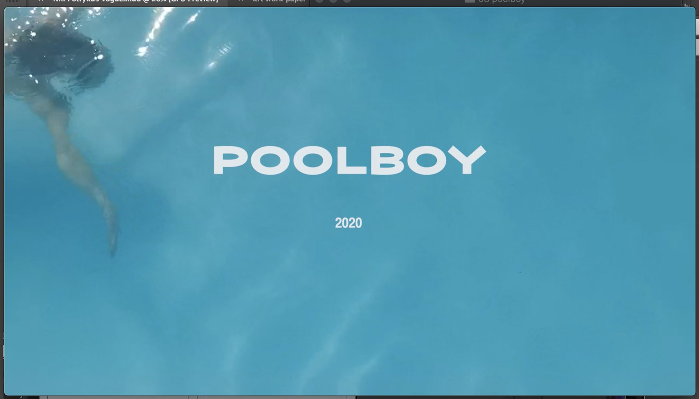

POOLBOY celebrating queer joy
Set against the backdrop of a shimmering blue pool, the film reflects candid moments of laughter, connection, and unfiltered happiness. Each frame serves as a testament to the beauty of diverse identities coming together, inviting viewers to immerse themselves in a world where love and authenticity flourish.
The water becomes a metaphor for fluidity, a space where boundaries dissolve, and stories interweave in a celebration of life and connection. POOLBOY is a call to honor the vibrant spectrum of queer existence and the joy that returns when we are safe enough to allow ourselves to simply be.
The film was shot, edited and first screened during a x-day artist residency, German countryside.
It is shot with a handheld cameraphone.
Music: Oklou
Continue exploring
All projects ↗